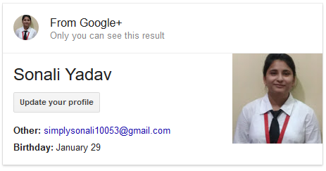

A skilled professional with 2+ years of experience in python, 1+ years in Java / Spring MVC and good problem solving and communication skills. Keen to learn new technologies and looking for constant enhancement in all spheres of life.

About 5,72,000 results (0.70 seconds)
Work Experience
To enhance my professional skills in a dynamic and stable workplace that offers me a consistently positive atmosphere to learn new technologies and implement them for the betterment of the organization.
Academics
https://erp.aktu.ac.in/WebPages/OneView/OVEngine.aspx?enc=L6Xqkq8rQ8MOIHPu4YJd0Qji+smSlwabBHgcQUtxYLursnpKbQQnC2XnVImcrFyf
B.Tech (CSE) (2013-17) from Axis Institute of Technology and Management,affiliated to APJ Abdul Kalam Technical University (UPTU) with 79.84% aggregate with Honors.
ISC (2012) from Huddard High School, Kanpur with 91% aggregate.
ICSE (2010) from Huddard High School, Kanpur with 93.8% aggregate.
Technical Skillset
skills pertaining to the course
PROGRAMMING LANGUAGES : C, Python, Core Java, SQL, HTML5, CSS3, Basic Android App development,Django
DATABASE TOOLS : Oracle 10g Express Edition
WORKING PLATFORMS : Windows 7,10
SOFTWARE WORKED ON : NetBeans, Eclipse, Android Studio, PyCharm
Courses
Core Java from Ritusha Consultants Pvt. Ltd
Android App Development & Core Java from Varargs Institute for Training & Development
Attended 2 days workshop on Basics of Matlab held at HBTI, Kanpur by Technophilia Systems Pvt. Ltd., Mumbai
Web development from Varargs Institute for Training & Development
Other Personal Details
NAME: Sonali Yadav
FATHER’S NAME : Mr. A K Yadav
DATE OF BIRTH : 29/01/1994
HOBBIES : programming, reading, painting, solving puzzles
NATIONALITY : Indian
LANGUAGES KNOWN : Hindi, English
EMAIL: simplysonali10053@gmail.com
Sonali Yadav images
Sonali Yadav profiles